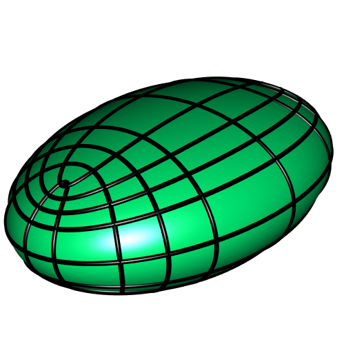
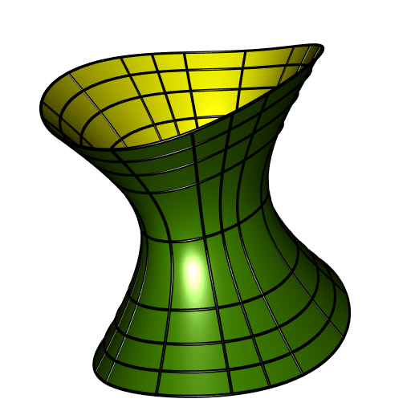

Focal quadrics and their lines of curvature
This blog post provides some R code for drawing focal quadrics and their curvatures lines with the rgl package.
Ellipsoid
The ellipsoidMesh function below generates a mesh of the ellipsoid of equation \[
\frac{x^2}{a^2} + \frac{y^2}{b^2} + \frac{z^2}{c^2} = 1.
\]
library(rgl)
ellipsoidMesh <- function(a, b, c, smoothness = 5){
stopifnot(a > 0, b > 0, c > 0)
sphere <- subdivision3d(icosahedron3d(), depth = smoothness)
sphere$vb[4L,] <-
apply(sphere$vb[1L:3L,], 2L, function(x) sqrt(sum(x*x)))
sphere$normals <- sphere$vb
scale3d(sphere, a, b, c)
}The curvature lines of this ellipsoid are generated by the function curvatureLinesE given below. There are two families of curvature lines. The arguments nu and nv control the numbers of curvature lines in these two families. When the ellipsoid is tri-axial, i.e. when \(a\), \(b\), \(c\) are distinct, the arguments du and dv must be positive and they control the size of the smallest curvature lines (if they were \(0\), the smallest curvature lines would degenerate to segments). When the ellipsoid is an ellipsoid of revolution, i.e. when two values of \(a\), \(b\), \(c\) are equal, the curvature lines are the meridians and the parallels; in this case, du is ignored, and dv, which must be positive and strictly smaller than \(\frac{\pi}{2}\), control the size of the smallest parallel.
curvatureLinesE <- function(a, b, c, nu, nv, du, dv, npoints = 100){
stopifnot(a > 0, b > 0, c > 0)
if((a != b && b != c) && (a < b || b < c)){
perm <- order(c(a,b,c), decreasing = TRUE)
abc <- c(a,b,c)[perm]
clines <-
curvatureLinesE(abc[1L], abc[2L], abc[3L], nu, nv, du, dv, npoints)
return(lapply(clines, function(l) l[, perm]))
}
if(a != b && b != c){
stopifnot(du > 0, dv > 0)
a2 <- a^2; b2 <- b^2; c2 <- c^2
h2ab <- a2 - b2; h2ac <- a2 - c2; h2bc <- b2 - c2
if(du >= h2ab) stop("`du` is too large.")
if(dv >= h2bc) stop("`dv` is too large.")
out <- vector("list", 2*nv-1 + 2*nu-1)
u_ <- seq(b2+du, a2, length.out = nu)
s_ <- seq(b2, a2, length.out = npoints)
v_ <- seq(c2, b2-dv, length.out = nv)
t_ <- seq(c2, b2, length.out = npoints)
mx <- a / sqrt(h2ac*h2ab)
my <- b / sqrt(h2bc*h2ab)
mz <- c / sqrt(h2bc*h2ac)
for(j in 1L:nv){
x <- mx * sqrt((a2-s_)*(a2-v_[j]))
y <- my * sqrt((s_-b2)*(b2-v_[j]))
z <- mz * sqrt((s_-c2)*(v_[j]-c2))
M <- rbind(cbind(x, y, z), cbind(-x, y, z)[(npoints-1):1L,])
M <- rbind(M, cbind(M[,1L], -M[,2L], M[,3L])[(2*npoints-2):1L,])
out[[j]] <- M
if(j > 1L){
out[[nv+j-1]] <- cbind(M[,c(1L,2L)], -M[,3L])
}
}
for(i in 1L:nu){
x <- mx * sqrt((a2-u_[i])*(a2-t_))
y <- my * sqrt((u_[i]-b2)*(b2-t_))
z <- mz * sqrt((u_[i]-c2)*(t_-c2))
M <- rbind(cbind(x, y, z), cbind(x, -y, z)[(npoints-1):1L,])
M <- rbind(M, cbind(M[,c(1L,2L)], -M[,3L])[(2*npoints-2):1L,])
out[[2*nv-1+i]] <- M
if(i < nu){
out[[2*nv-1+nu+i]] <- cbind(-M[,1L], M[,c(2L,3L)])
}
}
}else{ # a == b || b == c
# surface of revolution => curvature lines are meridians and parallels
stopifnot(dv > 0, dv < pi/2)
out <- vector("list", nu + nv)
u_ <- seq(0, 2*pi, length.out = nu+1)[-1L]
s_ <- seq(0, 2*pi, length.out = npoints)
v_ <- seq(-pi/2+dv, pi/2-dv, length.out = nv)
t_ <- seq(-pi, pi, length.out = npoints)
coss_ <- cos(s_); sins_ <- sin(s_)
cost_ <- cos(t_); sint_ <- sin(t_)
for(j in 1L:nv){
x <- a * coss_ * cos(v_[j])
y <- b * sins_ * cos(v_[j])
z <- c * sin(v_[j])
out[[j]] <- cbind(x, y, z)
}
for(i in 1L:nu){
x <- a * cos(u_[i]) * cost_
y <- b * sin(u_[i]) * cost_
z <- c * sint_
out[[nv+i]] <- cbind(x, y, z)
}
}
out
}Here is an example:
a = 7; b = 5; c = 3
mesh <- ellipsoidMesh(a, b, c)
clines <- curvatureLinesE(a, b, c, nu = 5, nv = 5, du = 0.4, dv = 1,
npoints = 300)
shade3d(mesh, col = "springgreen")
invisible(lapply(clines, function(l){
shade3d(cylinder3d(l, radius = 0.08, sides = 30))
}))
One-sheeted hyperboloid
There are three types of one-sheeted hyperboloids, corresponding to these equations: \[
\frac{x^2}{a^2} + \frac{y^2}{b^2} - \frac{z^2}{c^2} = 1 \\
\frac{x^2}{a^2} - \frac{y^2}{b^2} + \frac{z^2}{c^2} = 1 \\
-\frac{x^2}{a^2} + \frac{y^2}{b^2} + \frac{z^2}{c^2} = 1.
\] The hyperboloidMesh function below generates a mesh of the one-sheeted hyperboloid; the signature argument corresponds to one of the above equations, it must be "++-", "+-+" or "-++". The mesh is made of quadrilaterals and their number is controlled by the arguments nu and nv. The hyperboloid is infinite along the direction corresponding to the minus sign, and the argument vmin controls the truncation of the hyperboloid in this direction.
hyperboloidMesh <- function(a, b, c, signature, nu, nv, vmin){
stopifnot(signature %in% c("++-", "+-+", "-++"))
stopifnot(vmin < 1, a > 0, b > 0, c > 0)
if(signature == "+-+"){
mesh <- hyperboloidMesh(a, c, b, "++-", nu, nv, vmin)
mesh$vb <- mesh$vb[c(1L,3L,2L,4L),]
mesh$normals <- mesh$normals[c(1L,3L,2L),]
mesh$ib <- mesh$ib[4L:1L,]
return(mesh)
}else if(signature == "-++"){
mesh <- hyperboloidMesh(c, b, a, "++-", nu, nv, vmin)
mesh$vb <- mesh$vb[c(3L,2L,1L,4L),]
mesh$normals <- mesh$normals[c(3L,2L,1L),]
mesh$ib <- mesh$ib[4L:1L,]
return(mesh)
}
c0 <- c
if(b > a){
exchange <- TRUE
a0 <- b; b0 <- a
}else{
exchange <- FALSE
a0 <- a; b0 <- b
}
Mu2 <- a0^2
h2ab <- Mu2 - b0^2; h2ac <- c0^2 + Mu2
c2 <- 1; a2 <- c2 + h2ac; b2 <- a2 - h2ab
h2bc <- b2 - c2
#
vertices <- Normals <- matrix(NA_real_, nrow = 3L, ncol = nu*nv)
indices <- matrix(NA_integer_, nrow = 4L, ncol = (nu-1)*(nv-1))
v_ <- seq(vmin, c2, length.out = nv)
#
if(a0 != b0){
u_ <- seq(b2, a2, length.out = nu)
x <- a0 / sqrt(h2ac*h2ab) * sqrt(a2-u_)
y <- b0 / sqrt(h2bc*h2ab) * sqrt(u_-b2)
z <- c0 / sqrt(h2bc*h2ac) * sqrt(u_-c2)
}else{
u_ <- seq(0, 2*pi, length.out = nu+1)[-1L]
z <- rep(c0/sqrt(h2ac), nu)
mxy <- a0 / sqrt(h2ac)
x <- mxy * cos(u_)
y <- mxy * sin(u_)
}
for(i in 1:nu){
for(j in 1:nv){
P <- vertices[, (i-1)*nv+j] <- c(
x[i] * sqrt(a2-v_[j]),
y[i] * sqrt(b2-v_[j]),
z[i] * sqrt(c2-v_[j])
)
Normals[, (i-1)*nv+j] <- c(P[1L]/a0^2, P[2L]/b0^2, -P[3L]/c0^2)
}
}
# quads
for(i in 1L:(nu-1)){
im1 <- i-1L
for(j in 1L:(nv-1)){
jp1 <- j+1L
quad <- c(im1*nv+j, im1*nv+jp1, i*nv+jp1, i*nv+j)
indices[, im1*(nv-1)+j] <- if(exchange) rev(quad) else quad
}
}
vertices <- cbind(vertices, c(-1,1,1) * vertices)
indices <- cbind(indices, indices[4L:1L,] + nu*nv)
Normals <- cbind(Normals, c(-1,1,1) * Normals)
vertices <- cbind(vertices, c(1,-1,1) * vertices)
indices <- cbind(indices, indices[4L:1L,] + 2*nu*nv)
Normals <- cbind(Normals, c(1,-1,1) * Normals)
vertices <- cbind(vertices, c(1,1,-1) * vertices)
indices <- cbind(indices, indices[4L:1L,] + 4*nu*nv)
Normals <- cbind(Normals, c(1,1,-1) * Normals)
mesh <- qmesh3d(
vertices = if(exchange) vertices[c(2L,1L,3L),] else vertices,
indices = indices,
homogeneous = FALSE,
normals = t(if(exchange) Normals[c(2L,1L,3L),] else Normals)
)
mesh
}The curvatureLinesH1 function below generates some curvature lines of the one-sheeted hyperboloid. There are two families of curvature lines and the desired numbers of lines in them are controlled by the arguments nu and nv.
curvatureLinesH1 <- function(a, b, c, signature = "++-", nu, nv, vmin,
npoints = 100){
stopifnot(signature %in% c("++-", "+-+", "-++"))
stopifnot(vmin < 1, a > 0, b > 0, c > 0)
if(signature == "+-+"){
clines <- curvatureLinesH1(a, c, b, "++-", nu, nv, vmin, npoints)
return(lapply(clines, function(l) l[,c(1L,3L,2L)]))
}else if(signature == "-++"){
clines <- curvatureLinesH1(c, b, a, "++-", nu, nv, vmin, npoints)
return(lapply(clines, function(l) l[,c(3L,2L,1L)]))
}
c0 <- c
if(b > a){
exchange <- TRUE
a0 <- b; b0 <- a
}else{
exchange <- FALSE
a0 <- a; b0 <- b
}
Mu2 <- a0^2
h2ab <- Mu2 - b0^2; h2ac <- c0^2 + Mu2
c2 <- 1; a2 <- c2 + h2ac; b2 <- a2 - h2ab
h2bc <- b2 - c2
#
v_ <- seq(vmin, c2, length.out = nv)
t_ <- seq(vmin, c2, length.out = npoints)
#
if(a0 != b0){
u_ <- seq(b2, a2, length.out = nu)
s_ <- seq(b2, a2, length.out = npoints)
mx <- a0 / sqrt(h2ac*h2ab)
my <- b0 / sqrt(h2bc*h2ab)
mz <- c0 / sqrt(h2bc*h2ac)
out <- vector("list", 2*nv + 4*nu - 5)
for(j in 1L:nv){
x <- mx * sqrt((a2-s_)*(a2-v_[j]))
y <- my * sqrt((s_-b2)*(b2-v_[j]))
z <- mz * sqrt((s_-c2)*(c2-v_[j]))
M <- rbind(cbind(x, y, z), cbind(-x, y, z)[(npoints-1):1L,])
M <- rbind(M, cbind(M[,1L], -M[,2L], M[,3L])[(2*npoints-2):1L,])
out[[j]] <- M
if(j < nv){
out[[nv+j]] <- cbind(M[,c(1L,2L)], -M[,3L])
}
}
for(i in 1L:nu){
x <- mx * sqrt((a2-u_[i])*(a2-t_))
y <- my * sqrt((u_[i]-b2)*(b2-t_))
z <- mz * sqrt((u_[i]-c2)*(c2-t_))
M <- rbind(cbind(x, y, z), cbind(x, y, -z)[(npoints-1):1L,])
out[[2*nv-1+i]] <- M
if(i < nu){
out[[2*nv-1+nu+i]] <- cbind(-M[,1L], M[,c(2L,3L)])
if(i>1L) out[[2*nv+3*nu+i-4]] <- cbind(-M[,c(1L,2L)], M[,3L])
}
if(i > 1L){
out[[2*nv+2*nu+i-3]] <- cbind(M[,1L], -M[,2L], M[,3L])
}
}
}else{ # a0 = b0
u_ <- seq(0, 2*pi, length.out = nu+1)[-1L]
s_ <- seq(0, 2*pi, length.out = npoints)
coss_ <- cos(s_); sins_ <- sin(s_)
mxy <- a0 / sqrt(h2ac)
mz <- c0 / sqrt(h2bc)
out <- vector("list", 2*nv + 4*nu - 5)
for(j in 1L:nv){
x <- mxy * sqrt(a2-v_[j]) * coss_
y <- mxy * sqrt(b2-v_[j]) * sins_
z <- mz * sqrt(c2-v_[j])
M <- cbind(x, y, z)
out[[j]] <- M
if(j < nv){
out[[nv+j]] <- cbind(M[,c(1L,2L)], -M[,3L])
}
}
r <- mxy * sqrt(a2-t_)
z <- mz * sqrt(c2-t_)
for(i in 1L:nu){
x <- r * cos(u_[i])
y <- r * sin(u_[i])
M <- rbind(cbind(x, y, z), cbind(x, y, -z)[(npoints-1):1L,])
out[[2*nv-1+i]] <- M
if(i < nu){
out[[2*nv-1+nu+i]] <- cbind(-M[,1L], M[,c(2L,3L)])
if(i>1L) out[[2*nv+3*nu+i-4]] <- cbind(-M[,c(1L,2L)], M[,3L])
}
if(i > 1L){
out[[2*nv+2*nu+i-3]] <- cbind(M[,1L], -M[,2L], M[,3L])
}
}
}
if(exchange){
out <- lapply(out, function(M){
M[, c(2L,1L,3L)]
})
}
out
}Here is an example:
sgntr = "++-"
a = 4; b = 6; c = 5
mesh <- hyperboloidMesh(a, b, c, sgntr, nu = 100, nv = 100, vmin = -150)
clines <- curvatureLinesH1(a, b, c, sgntr, nu = 5, nv = 5, vmin = -150)
shade3d(mesh, color = "chartreuse4", back = "culled")
shade3d(mesh, color = "yellow", front = "culled")
invisible(lapply(clines, function(l){
shade3d(cylinder3d(l, radius = 0.1, sides = 30))
}))
Two-sheeted hyperboloid
There are three types of two-sheeted hyperboloids, corresponding to these equations: \[
\frac{x^2}{a^2} - \frac{y^2}{b^2} - \frac{z^2}{c^2} = 1 \\
-\frac{x^2}{a^2} - \frac{y^2}{b^2} + \frac{z^2}{c^2} = 1 \\
-\frac{x^2}{a^2} + \frac{y^2}{b^2} - \frac{z^2}{c^2} = 1.
\] The twoSheetsHyperboloidMesh function below generates a mesh of the two-sheeted hyperboloid; the signature argument corresponds to one of the above equations, it must be "+--", "--+" or "-+-". The mesh is made of quadrilaterals and their number is controlled by the arguments nu and nv. The two-sheeted hyperboloid is infinite and the argument vmin is here to control its truncation.
twoSheetsHyperboloidMesh <- function(a, b, c, signature, nu, nv, vmin){
stopifnot(signature %in% c("+--", "--+", "-+-"))
stopifnot(vmin < 1)
if(signature == "--+"){
mesh <- twoSheetsHyperboloidMesh(c, b, a, "+--", nu, nv, vmin)
mesh$vb <- mesh$vb[c(3L,2L,1L,4L),]
mesh$normals <- mesh$normals[c(3L,2L,1L),]
mesh$ib <- mesh$ib[4L:1L,]
return(mesh)
}else if(signature == "-+-"){
mesh <- twoSheetsHyperboloidMesh(b, a, c, "+--", nu, nv, vmin)
mesh$vb <- mesh$vb[c(2L,1L,3L,4L),]
mesh$normals <- mesh$normals[c(2L,1L,3L),]
mesh$ib <- mesh$ib[4L:1L,]
return(mesh)
}
a0 <- a
if(b > c){
exchange <- TRUE
b0 <- c; c0 <- b
}else{
exchange <- FALSE
b0 <- b; c0 <- c
}
Nu2 <- a0^2
h2ab <- b0^2 + Nu2; h2ac <- c0^2 + Nu2
c2 <- 1; a2 <- c2 + h2ac; b2 <- a2 - h2ab
h2bc <- b2 - c2
#
vertices <- Normals <- matrix(NA_real_, nrow = 3L, ncol = nu*nv)
indices <- matrix(NA_integer_, nrow = 4L, ncol = (nu-1)*(nv-1))
v_ <- seq(vmin, c2, length.out = nv)
#
if(b0 != c0){
u_ <- seq(c2, b2, length.out = nu)
x <- a0 / sqrt(h2ac*h2ab) * sqrt(a2-u_)
y <- b0 / sqrt(h2bc*h2ab) * sqrt(b2-u_)
z <- c0 / sqrt(h2bc*h2ac) * sqrt(u_-c2)
}else{
u_ <- seq(0, 2*pi, length.out = nu+1)[-1L]
x <- rep(a0/sqrt(h2ac), nu)
myz <- b0 / sqrt(h2ab)
y <- myz * cos(u_)
z <- myz * sin(u_)
}
for(i in 1:nu){
for(j in 1:nv){
P <- vertices[, (i-1)*nv+j] <- c(
x[i] * sqrt(a2-v_[j]),
y[i] * sqrt(b2-v_[j]),
z[i] * sqrt(c2-v_[j])
)
Normals[, (i-1)*nv+j] <- c(P[1L]/a0^2, -P[2L]/b0^2, -P[3L]/c0^2)
}
}
# quads
for(i in 1L:(nu-1)){
im1 <- i-1L
for(j in 1L:(nv-1)){
jp1 <- j+1L
quad <- c(im1*nv+j, im1*nv+jp1, i*nv+jp1, i*nv+j)
indices[, im1*(nv-1)+j] <- if(exchange) rev(quad) else quad
}
}
vertices <- cbind(vertices, c(-1,1,1) * vertices)
indices <- cbind(indices, indices[4L:1L,] + nu*nv)
Normals <- cbind(Normals, c(-1,1,1) * Normals)
vertices <- cbind(vertices, c(1,-1,1) * vertices)
indices <- cbind(indices, indices[4L:1L,] + 2*nu*nv)
Normals <- cbind(Normals, c(1,-1,1) * Normals)
vertices <- cbind(vertices, c(1,1,-1) * vertices)
indices <- cbind(indices, indices[4L:1L,] + 4*nu*nv)
Normals <- cbind(Normals, c(1,1,-1) * Normals)
mesh <- qmesh3d(
vertices = if(exchange) vertices[c(1L,3L,2L),] else vertices,
indices = indices,
homogeneous = FALSE,
normals = -t(if(exchange) Normals[c(1L,3L,2L),] else Normals)
)
mesh
}The curvatureLinesH2 function below generates some curvature lines of the two-sheeted hyperboloid. The role of the arguments du and dv is similar to the role of the arguments du and dv in curvatureLinesE.
curvatureLinesH2 <- function(a, b, c, signature, nu, nv, vmin, du, dv,
npoints = 100){
stopifnot(signature %in% c("+--", "--+", "-+-"))
stopifnot(du > 0, dv > 0, vmin < 1)
if(signature == "--+"){
clines <-
curvatureLinesH2(c, b, a, "+--", nu, nv, vmin, du, dv, npoints)
return(lapply(clines, function(l) l[, c(3L,2L,1L)]))
}else if(signature == "-+-"){
clines <-
curvatureLinesH2(b, a, c, "+--", nu, nv, vmin, du, dv, npoints)
return(lapply(clines, function(l) l[, c(2L,1L,3L)]))
}
a0 <- a
if(b > c){
exchange <- TRUE
b0 <- c; c0 <- b
}else{
exchange <- FALSE
b0 <- b; c0 <- c
}
Nu2 <- a0^2
h2ab <- b0^2 + Nu2; h2ac <- c0^2 + Nu2
c2 <- 1; a2 <- c2 + h2ac; b2 <- a2 - h2ab
h2bc <- b2 - c2
#
if(b0 != c0 && c2+du >= b2){
stop("`du` is too large.")
}
if(vmin >= c2-dv){
stop("`dv` is too large")
}
v_ <- seq(vmin, c2-dv, length.out = nv)
t_ <- seq(vmin, c2, length.out = npoints)
out <- vector("list", 2*nv + 4*nu - 2)
#
if(b0 != c0){
u_ <- seq(c2+du, b2, length.out = nu)
s_ <- seq(c2, b2, length.out = npoints)
mx <- a0 / sqrt(h2ac*h2ab)
my <- b0 / sqrt(h2bc*h2ab)
mz <- c0 / sqrt(h2bc*h2ac)
for(j in 1L:nv){
x <- mx * sqrt((a2-s_)*(a2-v_[j]))
y <- my * sqrt((b2-s_)*(b2-v_[j]))
z <- mz * sqrt((s_-c2)*(c2-v_[j]))
M1 <- rbind(cbind(x, y, z), cbind(x, -y, z)[(npoints-1):1L,])
M2 <- cbind(M1[,c(1L,2L)], -M1[,3L])
M <- rbind(M1, M2[(2*npoints-2):1L,])
out[[j]] <- if(exchange) M[,c(1L,3L,2L)] else M
out[[nv+j]] <-
cbind(-M[,1L], if(exchange) M[,c(3L,2L)] else M[,c(2L,3L)])
}
for(i in 1L:nu){
x <- mx * sqrt((a2-u_[i])*(a2-t_))
y <- my * sqrt((b2-u_[i])*(b2-t_))
z <- mz * sqrt((u_[i]-c2)*(c2-t_))
M <- rbind(cbind(x, y, z), cbind(x, y, -z)[(npoints-1):1L,])
out[[2*nv+i]] <- if(exchange) M[,c(1L,3L,2L)] else M
if(i < nu){
out[[2*nv+nu+i]] <- if(exchange)
cbind(M[,c(1L,3L)], -M[,2L])
else
cbind(M[,1L], -M[,2L], M[,3L])
}
}
}else{ # b0 = c0
u_ <- seq(0, 2*pi, length.out = nu+1)[-1L]
s_ <- seq(0, 2*pi, length.out = npoints)
mx <- a0 / sqrt(h2ac)
myz <- b0 / sqrt(h2ab)
for(j in 1:nv){
x <- mx * sqrt(a2-v_[j])
y <- myz * sqrt(b2-v_[j]) * cos(s_)
z <- myz * sqrt(c2-v_[j]) * sin(s_)
M <- cbind(x, y, z)
out[[j]] <- if(exchange) M[,c(1L,3L,2L)] else M
out[[nv+j]] <-
cbind(-M[,1L], if(exchange) M[,c(3L,2L)] else M[,c(2L,3L)])
}
for(i in 1:nu){
x <- mx * sqrt(a2-t_)
y <- myz * sqrt(b2-t_) * cos(u_[i])
z <- myz * sqrt(c2-t_) * sin(u_[i])
M <- rbind(cbind(x, y, z), cbind(x, -y, -z)[(npoints-1):1L,])
out[[2*nv+i]] <- if(exchange) M[,c(1L,3L,2L)] else M
if(i < nu){
out[[2*nv+nu+i]] <- if(exchange)
cbind(M[,c(1L,3L)], -M[,2L])
else
cbind(M[,1L], -M[,2L], M[,3L])
}
}
}
#
out[(2*nv+2*nu):(2*nv+4*nu-2)] <-
lapply(out[(2*nv+1):(2*nv+2*nu-1)], function(M){
cbind(-M[,1L], M[,c(2L,3L)])
})
out
}An example:
a = 6; b = 5; c = 3
sgntr = "-+-"
mesh <- twoSheetsHyperboloidMesh(a, b, c, sgntr, 100, 100, vmin = -500)
clines <- curvatureLinesH2(a, b, c, sgntr, nu = 5, nv = 5, vmin = -500,
du = 1, dv = 20, npoints = 300)
shade3d(mesh, color = "navyblue", back = "culled")
shade3d(mesh, color = "goldenrod", front = "culled")
invisible(lapply(clines, function(l){
shade3d(cylinder3d(l, radius = 0.2, sides = 30))
}))
General quadric
A general quadric in \(\mathbb{R}^3\) has equation \[ (x \quad y \quad z)\, A \begin{pmatrix} x \\ y \\ z \end{pmatrix} + J' \begin{pmatrix} x \\ y \\ z \end{pmatrix} + K = 0, \] where \(A\) is a symmetric \((3\times 3)\)-matrix, \(J \in \mathbb{R}^3\), and \(K \in \mathbb{R}\). Let’s treat an example. We follow the strategy given at page 45 of Brannan & al’s book Geometry (pdf).
A = matrix(c(
5, -1, -1,
-1, 3, 1,
-1, 1, -3
), nrow = 3L, ncol = 3L)
J = c(4, 6, 8)
K = -10
# computes spectral decomposition of A
eig <- eigen(A)
P <- eig$vectors
( evalues <- eig$values )
## [1] 5.614627 2.632676 -3.247303There is no eigenvalue equal to \(0\); this is the first necessary condition in order for the solution of the equation to be a focal quadric.
Now we write the equation in the form \[ \lambda_1 {(x'')}^2 + \lambda_2 {(y'')}^2 + \lambda_3 {(z'')}^2 = \mathrm{rhs} \] where \(\lambda_1\), \(\lambda_2\), \(\lambda_3\) are the eigenvalues of \(A\), and \((x'',y'',z'')\) is a new coordinate system.
center <- c(t(J) %*% P) / evalues / 2
( rhs <- sum(evalues * center^2) - K )
## [1] 11.5
( sgntr <- paste0(ifelse(rhs*evalues > 0, "+", "-"), collapse = "") )
## [1] "++-"We find \(\mathrm{rhs} \neq 0\), so the solution of the equation is a focal quadric. If \(\mathrm{rhs} = 0\), the solution is a cone.
The signature is \(++-\), so the solution of the equation is a one-sheeted hyperboloid. By dividing both members of the previous equality by \(\mathrm{rhs}\), we get its equation in standard form.
abc <- sqrt(abs(rhs/evalues))
a <- abc[1]; b <- abc[2]; c <- abc[3]
mesh0 <- hyperboloidMesh(a, b, c, sgntr, 100, 100, -5)
# final quadric mesh:
mesh <- rotate3d(
translate3d(mesh0, -center[1], -center[2], -center[3]),
matrix = t(P)
)We can check that the equation is fulfilled for some vertices of the final mesh:
apply(mesh$vb[-4, 1:5], 2L, function(x){
c(t(x) %*% A %*% x + t(J) %*% x) + K
})
## [1] 5.684342e-14 7.105427e-14 4.973799e-14 4.973799e-14 4.263256e-14Up to small numerical errors, we indeed get \(0\) for each of the five vertices.